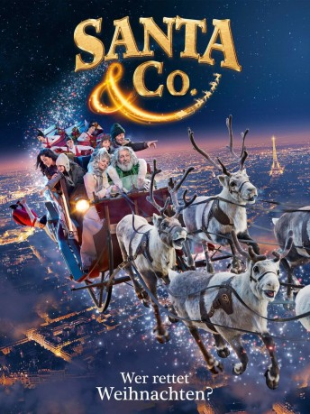
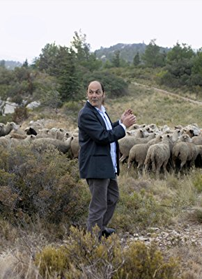

#10162 Santa & Co.
Alternativ: Christmas & Co. (Englischer Titel)
 
 IMDB-Wertung: 6.3 / 10
IMDB-Wertung: 6.3 / 10  Metascore: 0
Metascore: 0 
Heiligabend steht vor der Tür und Kinder auf der ganzen Welt können es kaum erwarten, ihre Geschenke auszupacken. Als die Elfen von Santa Claus plötzlich alle krank werden, muss die Produktion der Spielzeuge gestoppt werden. Das Weihnachtsfest ist in Gefahr! Santa bleibt keine andere Wahl: Er muss mit seinen Rentieren auf die Erde fliegen, um ein Heilmittel für seine Helfer zu suchen. Doch alleine hat er keine Chance. Nur mit der Hilfe von Verbündeten kann das Weihnachtsmärchen noch gerettet werden!
Jahr: 2017
Dauer: 100 Minuten
FSK: 0
Land: Frankreich Studio: Splendid FilmTonspuren:
Untertitel: Deutsch,
Auflösung: 1080p (1920x800) Größe: 5120 MB
Genre: Komödie, Fantasy, Familie
Regisseur: Alain Chabat
Drehbuch: Alain Chabat, Alain Chabat, Alain Chabat
Soundtrack: Matthieu Gonet
Darsteller:
 Alain Chabat als Santa Claus
Alain Chabat als Santa Claus Golshifteh Farahani als Amélie
Golshifteh Farahani als Amélie Pio Marmaï als Thomas
Pio Marmaï als Thomas Audrey Tautou als Wanda Claus
Audrey Tautou als Wanda Claus- Grégoire Ludig als Commissaire Stéphane Bertoli
-  Jean-Pierre Bacri als Le Père Noël rouge et blanc
- Stella Rocha als Gisèle / Gustavo
 Sissi Duparc als Collègue Amélie Rungis
Sissi Duparc als Collègue Amélie Rungis- Kyan Khojandi als Le frère d'Amélie
- Donia Eden als Membre famille Amélie
- Jeff Genie als Membre famille Amélie
- Carlos Fernandes als
- Bruno Sanches als Magnus et les 45999 lutins
- Louise Chabat als Les 46000 lutines
- David Marsais als Inspecteur Olivier Le Guennec
- Johann Dionnet als Jay
- Tara Lugassy als Maëlle
- Simon Aouizerate als Mathis
- Mark Grosy als Le pharmacien
- Audrey Giacomini als La pharmacienne
- Ambre Larrazet Llop als La fliquette
- Xing Xing Cheng als La grand-mère chinoise
- Jiamin Phuong als La petite fille caprice
- Nicolas Lumbreras als Le poissonnier
- Paloma Coquant als Barmaid Rungis
- Frisch Yann als Pilier comptoir Rungis
- Ian Fenelon als Pilier comptoir Rungis
- Gérard Graillot als Pilier comptoir Rungis
- Coralie Amedeo als Femme parc bébé
- Elena Plonka als Tatyana
- Veronica Novak als Barbara
- Thomas Vandenberghe als Le dealer de blagues cauchemar
- Nagisa Morimoto als Guide bateau parisien
- Charline Paul als Evil Lutine mais gentille quand même
- Patrick Timsit als L'oncle d'Amélie
- Robert Kechichian als Membre famille Amélie
- Zineb Tamazit als Membre famille Amélie
- Jean-Philippe Moreaux als Membre famille Amélie
- Chouchane Tcherpachian als Membre famille Amélie
- Lili Sedan als Membre famille Amélie
- Malik Moreau als Membre famille Amélie
- Eloïse Sivan als Membre famille Amélie
- Maxime Perrot als Membre famille Amélie
- Majida Ghomari als Membre famille Amélie
- Zaven Najjar als Membre famille Amélie
- Lisette Tcherpachian als Membre famille Amélie
- Malika Tamazit als Membre famille Amélie
- Paul Alric als
- Anne-Claire Barrière als
- Nicolas Vion als
Datei: X:\2017(N-Z)\Santa & Co. (2017, FSK0, 1920x800).mkv seit 13.12.2018
Festplatte: HD 2017(A-Z)-2018(A-F)
 Es gibt insgesamt 170 Filme in der Gruppe '2017(N-Z)'
Es gibt insgesamt 170 Filme in der Gruppe '2017(N-Z)'